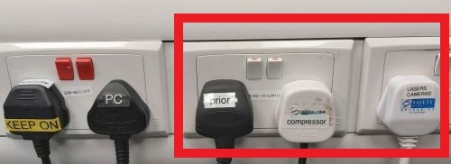
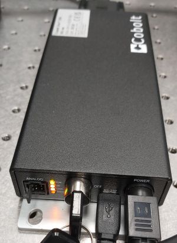
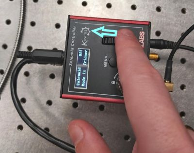
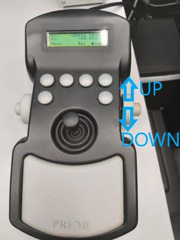
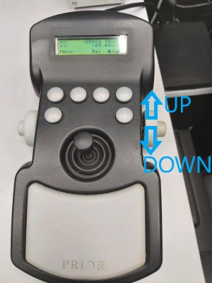
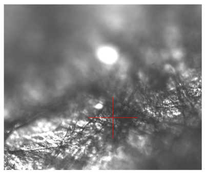
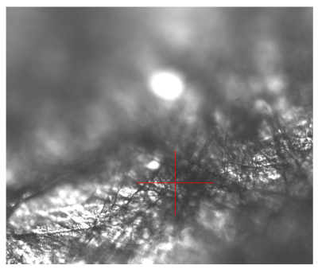
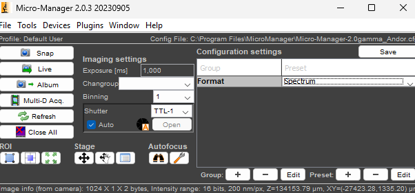
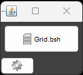
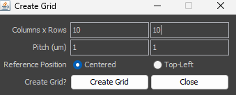

Switching On:
1. Turn on the following mains plugs: Prior, compressor, lasers/cameras

2. Turn on the laser key switch

3. Initialise the shutter by turning the wheel on the shutter controller in the direction indicated by the arrow in the picture:

4. Turn on the transmitted light lamp

5. Turn on the PC and log in as user (password: user)
Locating Sample Using Brightfield:
1. Place sample on the microscope stage
2. Pull out the laser mirror slider

3. Move the objective close to the sample and then move it slowly away from the sample while observing the sample in the eyepiece or on screen using the brightfield camera (see the following points). Use the manual focusing knob for course focus movement and the knobs on the stage joystick for fine focus movement. Never use the manual fine focusing knob!
 
Use the slider on the trinocular to switch between eyepiece /
eyepiece
and camera / camera.

4. Use SpinView software to see brightfield camera image. Select the camera in the software and start live view. The red cross indicates approximate position of the laser focus in the sample. You can use SpinView to save brightfield images.
 

5. When you have found a suitable location in the sample, push in the laser mirror and cover the stage before starting microspectoscopy acquisition.

Raman microspectroscopy:
1. Start Micro-Manager (MM 2.0 - Raman) and select "Andor" configuration in the initial dialogue:

2. In the main panel select "Spectrum" Format:

3. Set the exposure time (1 s is typically the minimum needed to see a clear spectrum).
4. Turn off the room lights and press Live to see live spectrum for focusing or stage movement (use the Stage control in Micro-Manager for fine movement by defined steps) or Snap to capture a single spectrum. Refer to Micro-Manager User Guide for more information on the user interface and functions.
5. The spectrum is displayed as an image consisting of a single line of pixels. To see the spectrum as plot, click on the Image J panel that opened with Micro-Manager and use on of the following keyboard shortcuts:
q - shows the spectrum plot in unscaled units, press "Live" button under the plot to make it refresh with each new frame acquired; all controls in Micro-Manager are active while this plot display is running
Q - shows the spectrum in scaled units and refreshes at a fixed interval. Most Micro-Manager controls are inactive while this plot display is running.

Troubleshooting: If the spectrum is not updated while Live acquisition is running, it may be caused by the size of the live image window (the image with a single line of pixels) being reduced. Try enlarging this window.
6. To perform an automated acquisition of multiple spectra: time series, Z-stack, multi-position (mapping in XY plane), open Multi-D Acq., select and configure the appropriate experiment type (you can combine more, e.g. Z-stack in time series) and start experiment by pressing Acquire!

7. You can set up the path and name for saving results when you select the Save Images option.
Practical tip: The images are saved as Tiff of a very large size (containing much more ballast than the actual data. By opening and saving them in Image J/FIJI (can be done automatically in batch) a lot of space can be saved! Alternatively, the macros to remove cosmic ray spikes from spectra and for exporting the spectra as CSV tables do this compression job too.
8. To generate a list of positions for Raman mapping in a grid of points, use custom Grid tool. The window with a button to call this tool should be visible by default; in case it has been closed, you can open it by Tools/Quick Access Panel/Grid.

The button opens a following dialogue:

In the example shown a grid of 10 x 10 positions with 1um spacing centered around the current stage position will be generated. If Multiple Positions (XY) are activated in Multi-D Acq. the Summary will show Number of points: 100 (see above).
Switching Off:
1. Make sure you have saved your data and turn off Micro-Manager.
2. Pull out the laser mirror, lower the objective and remove the sample.
3. If you have used an immersion objective, wipe it clean. Use the lens cleaning tissue. For cleaning oil immersion, moisten the tissue at the solvent dispenser. Always wipe the objective only once, in one direction. If this is not sufficient, repeat with a new piece of tissue. Never reuse the tissue.


4. Check in PPMS calendar if there is any user coming shortly (< 90 min) after you. If yes log off from PPMS tracker and proceed to point 9. If no, follow all the points.
5. Turn off the laser key and transmitted light lamp.
6. Turn off the mains for Prior, compressor, lasers/cameras.
7. Put the PC to sleep.
8. Cover the microscope with dust cover.
9. Make sure you leave the microscope room clean. Spray with 70% ethanol and wipe any surfaces that could have been in contact with biological material. Do not leave any samples or any other belongings behind.